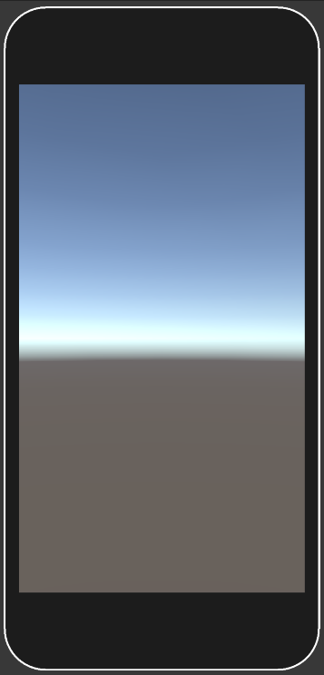
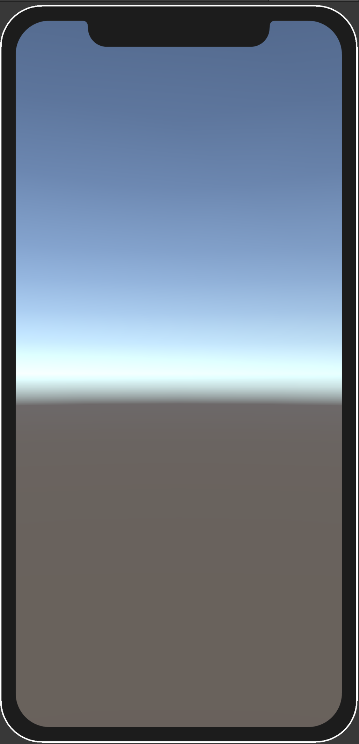

To add a new device to the Device Simulator, you create a device definition and a device overlay.
A device definition is a text file with the .device extension in your Unity project. It contains JSON that describes the properties of a device.
A device overlay is an image that contains the border of the device screen, together with notches, punchouts, and any other additions to the screen rectangle. You can optionally use it with a device definition to visualize how hardware elements obstruct the device screen, and to determine when touch inputs fail as a result.
A device definition is a JSON file that represents the device. It has both required properties and some optional properties. If a device definition file contains any errors, the errors appear in the Inspector when you select the file.
| 属性 | Required | 描述 |
|---|---|---|
| friendlyName | 是 | The name to display in the UI for this device. |
| version | 是 | Indicates the version of the device definition file. Currently, the version is 1. |
| screens | 是 | A list of objects that each describe a screen to simulate the device for. This must contain at least one screen. For information about the schema of each screen object, see screen. |
| systemInfo | 是 | An object that describes the capabilities of the device. The values in this object map to SystemInfo. For information about the schema of the systemInfo object, see systemInfo. |
| 属性 | Required | 描述 |
|---|---|---|
| width | 是 | The width, in pixels, of the screen. |
| height | 是 | The height, in pixels, of the screen. |
| navigationBarHeight | 否 | The height, in pixels, of the on-screen Android navigation bar that appears on some devices when not in fullscreen. |
| dpi | 是 | The dpi of the screen. |
| orientations | 否 | A list of objects that each describe an orientation the screen can simulate. If you don’t set a value for this property, the screen supports all orientations. For information about the schema of each orientation object, see orientation. |
| presentation | 否 | An object that describes the device overlay. For information about the schema of this object, see presentation. |
| 属性 | Required | 描述 |
|---|---|---|
| orientation | 是 | The screen orientation. The value of this property is a number that maps to the ScreenOrientation enum. |
| safeArea | 否 | A Rect that determines the safe area of the screen. If you don’t set a value for this property, the simulator assumes the entire screen is safe. |
| cutouts | 否 | A list of Rects that specify areas of the screen that aren’t functional for displaying content. |
| 属性 | Required | 描述 |
|---|---|---|
| overlayPath | 否 | A relative path from the device definition file to an image to use as the device overlay. |
| borderSize | 否 | The distance, in pixels, from the overlay to where the screen begins. |
The properties in this object describe the capabilities and system information of the device. Since they describe the system information, many of them map to properties in SystemInfo.
| 属性 | Required | 描述 |
|---|---|---|
| deviceModel | 否 | See Device.SystemInfo.deviceModel. |
| deviceType | 否 | See Device.SystemInfo.deviceType. |
| operatingSystem | 是 | See Device.SystemInfo.operatingSystem. |
| operatingSystemFamily | 否 | See Device.SystemInfo.operatingSystemFamily. |
| processorCount | 否 | See Device.SystemInfo.processorCount. |
| processorFrequency | 否 | See Device.SystemInfo.processorFrequency. |
| processorType | 否 | See Device.SystemInfo.processorType. |
| supportsAccelerometer | 否 | See Device.SystemInfo.supportsAccelerometer. |
| supportsAudio | 否 | See Device.SystemInfo.supportsAudio. |
| supportsGyroscope | 否 | See Device.SystemInfo.supportsGyroscope. |
| supportsLocationService | 否 | See Device.SystemInfo.supportsLocationService. |
| supportsVibration | 否 | See Device.SystemInfo.supportsVibration. |
| systemMemorySize | 否 | See Device.SystemInfo.systemMemorySize. |
| unsupportedIdentifier | 否 | See Device.SystemInfo.unsupportedIdentifier. |
| graphicsDependentData | 否 | A list of objects that each describe graphics APIs that the device supports. For information about the schema of each object, see graphicsDependentData. |
The properties in the object describe a graphics API that the device supports.
The following device definition contains every required property and no optional properties. This is the minimum device definition you can have.
Note: This device definition doesn’t provide orientation data, so the simulator assumes the device supports all orientations and that the safe area covers the entire screen.
{
"friendlyName": "Minimal Device",
"version": 1,
"screens": [
{
"width": 1080,
"height": 1920,
"dpi": 450.0
}
],
"systemInfo": {
"operatingSystem": "Android"
}
}
The following device definition contains every required and optional property.
{
"friendlyName": "Apple iPhone XR",
"version": 1,
"screens": [
{
"width": 828,
"height": 1792,
"navigationBarHeight": 0,
"dpi": 326.0,
"orientations": [
{
"orientation": 1,
"safeArea": {
"serializedVersion": "2",
"x": 0.0,
"y": 68.0,
"width": 828.0,
"height": 1636.0
},
"cutouts": [
{
"serializedVersion": "2",
"x": 184.0,
"y": 1726.0,
"width": 460.0,
"height": 66.0
}
]
},
{
"orientation": 3,
"safeArea": {
"serializedVersion": "2",
"x": 88.0,
"y": 42.0,
"width": 1616.0,
"height": 786.0
},
"cutouts": [
{
"serializedVersion": "2",
"x": 0.0,
"y": 184.0,
"width": 66.0,
"height": 460.0
}
]
},
{
"orientation": 4,
"safeArea": {
"serializedVersion": "2",
"x": 88.0,
"y": 42.0,
"width": 1616.0,
"height": 786.0
},
"cutouts": [
{
"serializedVersion": "2",
"x": 1726.0,
"y": 184.0,
"width": 66.0,
"height": 460.0
}
]
}
],
"presentation": {
"overlayPath": "Apple iPhone 11_Overlay.png",
"borderSize": {
"x": 51.0,
"y": 51.0,
"z": 51.0,
"w": 51.0
}
}
}
],
"systemInfo": {
"deviceModel": "iPhone11,8",
"deviceType": 1,
"operatingSystem": "iOS 12.0",
"operatingSystemFamily": 0,
"processorCount": 6,
"processorFrequency": 0,
"processorType": "arm64e",
"supportsAccelerometer": true,
"supportsAudio": true,
"supportsGyroscope": true,
"supportsLocationService": true,
"supportsVibration": true,
"systemMemorySize": 2813,
"unsupportedIdentifier": "n/a",
"graphicsDependentData": [
{
"graphicsDeviceType": 16,
"graphicsMemorySize": 1024,
"graphicsDeviceName": "Apple A12 GPU",
"graphicsDeviceVendor": "Apple",
"graphicsDeviceID": 0,
"graphicsDeviceVendorID": 0,
"graphicsUVStartsAtTop": true,
"graphicsDeviceVersion": "Metal",
"graphicsShaderLevel": 50,
"graphicsMultiThreaded": true,
"renderingThreadingMode": 0,
"hasHiddenSurfaceRemovalOnGPU": true,
"hasDynamicUniformArrayIndexingInFragmentShaders": true,
"supportsShadows": true,
"supportsRawShadowDepthSampling": true,
"supportsMotionVectors": true,
"supports3DTextures": true,
"supports2DArrayTextures": true,
"supports3DRenderTextures": true,
"supportsCubemapArrayTextures": true,
"copyTextureSupport": 31,
"supportsComputeShaders": true,
"supportsGeometryShaders": false,
"supportsTessellationShaders": true,
"supportsInstancing": true,
"supportsHardwareQuadTopology": false,
"supports32bitsIndexBuffer": true,
"supportsSparseTextures": false,
"supportedRenderTargetCount": 8,
"supportsSeparatedRenderTargetsBlend": true,
"supportedRandomWriteTargetCount": 8,
"supportsMultisampledTextures": 1,
"supportsMultisampleAutoResolve": false,
"supportsTextureWrapMirrorOnce": 0,
"usesReversedZBuffer": true,
"npotSupport": 2,
"maxTextureSize": 16384,
"maxCubemapSize": 16384,
"maxComputeBufferInputsVertex": 8,
"maxComputeBufferInputsFragment": 8,
"maxComputeBufferInputsGeometry": 0,
"maxComputeBufferInputsDomain": 8,
"maxComputeBufferInputsHull": 8,
"maxComputeBufferInputsCompute": 8,
"maxComputeWorkGroupSize": 1024,
"maxComputeWorkGroupSizeX": 1024,
"maxComputeWorkGroupSizeY": 1024,
"maxComputeWorkGroupSizeZ": 1024,
"supportsAsyncCompute": false,
"supportsGraphicsFence": true,
"supportsAsyncGPUReadback": true,
"supportsRayTracing": false,
"supportsSetConstantBuffer": true,
"hasMipMaxLevel": true,
"supportsMipStreaming": true,
"usesLoadStoreActions": true,
"supportedTextureFormats": [1, 2, 3, 4, 5],
"supportedRenderTextureFormats": [1, 2, 3, 4, 5],
"ldrGraphicsFormat": 59,
"hdrGraphicsFormat": 74
}
]
}
}
A device overlay is an image that contains the border of the device screen and other features such as notches, punchouts, and any other additions to the screen rectangle. You can optionally use it with a device definition to visualize how hardware elements obstruct the device screen, and to determine when touch inputs fail as a result.
The Device Simulator interprets transparent pixels as areas of the screen you can tap, and opaque pixels of any other color as areas that the hardware obstructs. The texture itself can be any shape.
The following examples show device overlays for two iPhone models.
Note: To mimic what you see when you use a device overlay, these examples display Unity’s default skybox in the area of the screen where you can tab. In a real device overlay, these pixels should be transparent.
| Apple iPhone 8 Overlay | Apple iPhone XS Overlay |
|---|---|
|  |  |
After you create a device overlay texture, to use it with a device definition you must first import the device overlay texture file into your project.
Note: When the Device Simulator loads a device overlay texture, it attempts to enable Read/Write for it. If this isn’t possible, the Device Simulator displays the texture but can’t use the texture to mask input. This means that if you click on notches and other areas of the screen that the device overlay should mask, the Device Simulator detects input. To ensure this doesn’t happen, when you import the device overlay texture, enable Read/Write in the Texture Import Settings window.
When the device overlay texture is in your project, open the device definition file and, in the object that defines a screen the device supports, add the presentation property. Here, set the path to the image file (overlayPath) and the size of the borders (borderSize). For an example of how to do this, see the following device definition file:
{
"friendlyName": "Minimal Device with Overlay",
"version": 1,
"screens": [
{
"width": 1080,
"height": 1920,
"dpi": 450.0,
"presentation": {
"overlayPath": "Overlays/MinimalDeviceOverlay.png",
"borderSize": {
"x": 51.0,
"y": 51.0,
"z": 51.0,
"w": 130.0
}
}
}
],
"systemInfo": {
"operatingSystem": "Android"
}
}
Note: The path to the device overlay texture file can be relative to the device definition file, or relative to the directory that contains the Assets or Packages directory in your Unity project. For example, if the device definition file is in the Assets/Devices directory and the device overlay file is in the Assets/Devices/Overlays directory, the following file paths are both valid: